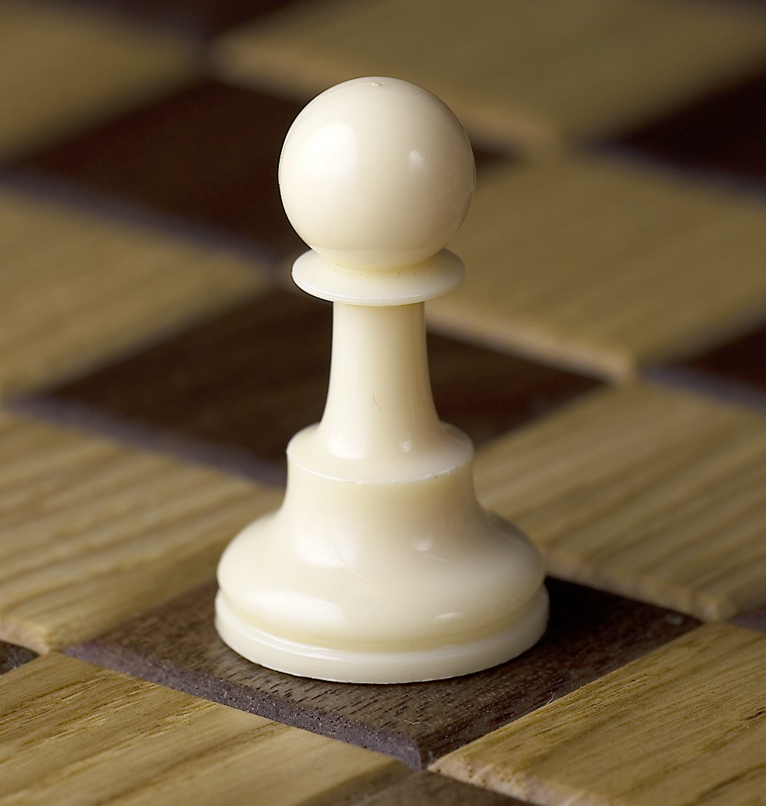
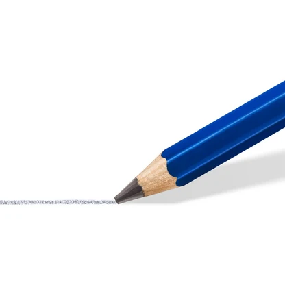
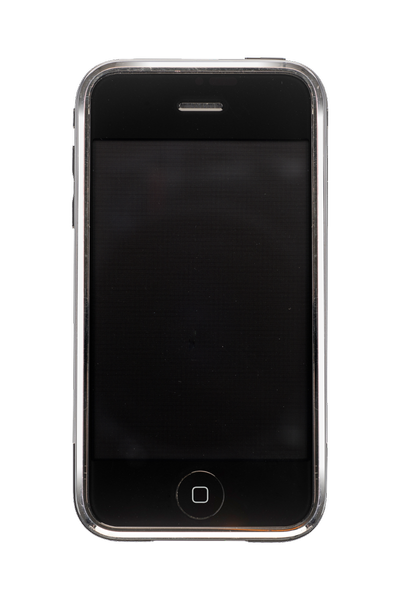

Chess

I play chess to challenge my mind and improve my strategic thinking. I'm an intermediate player and enjoy games with friends and other players online.
lichess.org · chess.com
My hobbies help me stay curious, inspired, and ready for new ideas.
I am not always working on projects or my course work, sometimes I take a break and recharge. I have football, drawing, chess, I enjoy both playing them and watching others play them. Sometimes I watch movies, series', play video games, music, window shopping, and more more and more activities that help me relax.

I play chess to challenge my mind and improve my strategic thinking. I'm an intermediate player and enjoy games with friends and other players online.
lichess.org · chess.com

I draw what I see, sometimes humans, objects...; actually anything that comes on mind.


I play with friends and other students, and I follow my favorite teams from South Africa and around the world.



Everyone today likes scrolling on social media, IG, Facebook, LinkedIn, and all those platforms just to see what is happening around.
Not good at this, but I like taking pictures of random things around, my laptop, buildings, roads, humans, and anything visually appealing to me.

Beyond the main hobbies, I also enjoy a game of pool, and other casual activities that keep things fun and balanced.